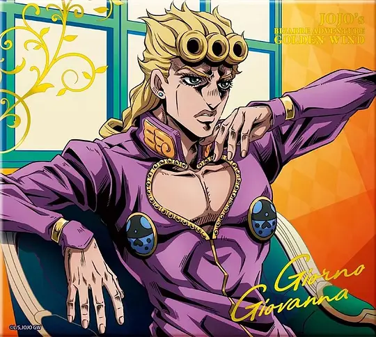
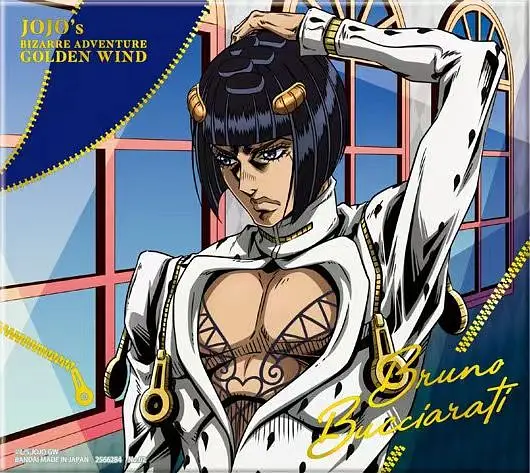
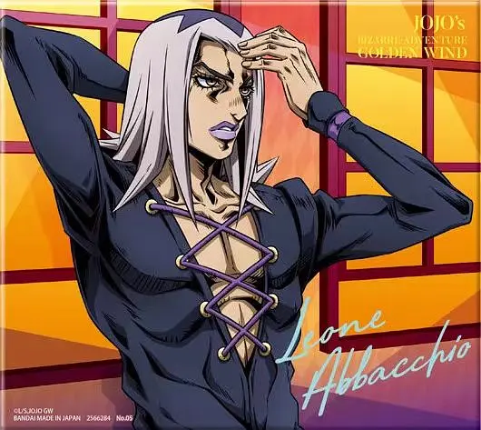
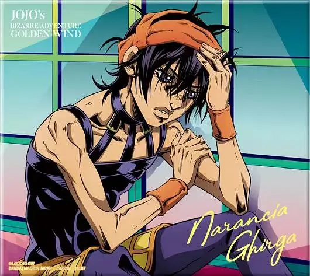
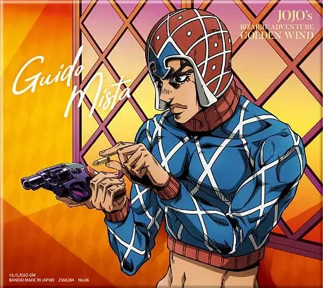
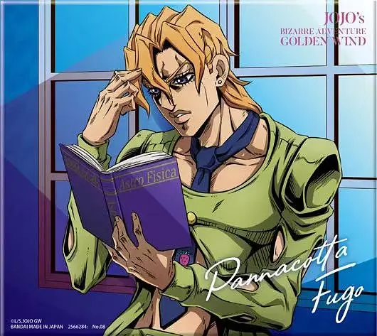
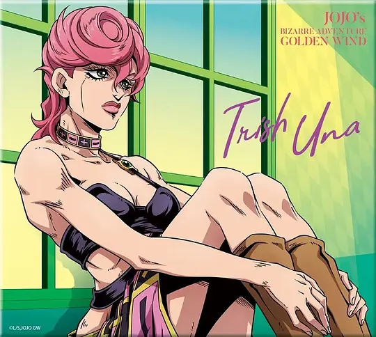
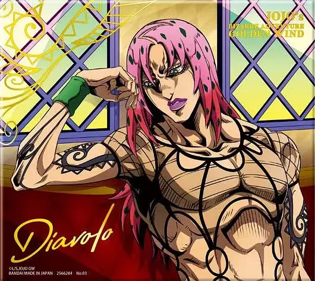

 |
喬魯諾·喬巴拿
Giorno Giovanna |
| 替身:黃金體驗 身高:172cm 年齡:15歲 生日:4月16日 星座:白羊座 血型:AB型 出身地區:日本 活動範圍:義大利 所屬團體:黑幫組織「熱情」 |
|
| 喬魯諾沒有喬納森和喬瑟夫那樣優秀的肉體格鬥能力，其替身也不像後面三個晚輩一樣擁有A級破壞力，導致劇中打戲極少，戰鬥中時常運用豐富的科學知識與洞察力扭轉劣勢，雖然很少會感情用事。但和繼承喬斯達家血統的歷代JOJO們一樣，喬魯諾也擁有強烈的正義感，過人的行動力讓他敢於為夥伴犧牲，就算自己身受重傷也會全力援助夥伴，原本看不起喬魯諾的小隊成員，在旅程中逐漸對其產生了深厚的信任感。另一方面，由於擁有DIO的血脈，因此喬魯諾也繼承了DIO殘忍的一面，當然只會對草菅人命的人渣或是徹底惹惱自己的人以十分殘酷的方式加倍報復回去。 | |
 |
布魯諾·布加拉提
Bruno Bucciarati |
| 登場作品:《黃金之風》 替身:鋼鍊手指 身高:178cm 年齡:20歲 生日:9月27日 星座:天秤座 血型:A型 出身地區:義大利那不勒斯 活動範圍:義大利 所屬團體:義大利熱情組織（布加拉提小隊） |
|
| 20歲，「熱情」的幹部波爾波麾下小隊的領導者，極其痛恨毒品[11]。12歲時為了保護父親不惜犯下殺人罪，之後以對組織的效忠來換取自己和父親的人身安全，在波爾波死後因為找到「波爾波的秘寶」並交還組織，繼承了其位置成為了幹部，並代替波爾波接下護送老闆女兒特里休的任務，但這個任務卻也因此讓他徹底看清老闆真正的目的，毅然決然地率領自己的小隊成員背叛組織，並用最後的生命守護了特里休。 | |
 |
雷奧·阿帕基
Leone Abbacchio |
| 登場作品:《黃金之風》 替身:憂鬱藍調 身高:188cm 年齡:20歲 生日:3月25日 星座:牡羊座 血型:A型 出身地區:義大利 活動範圍:義大利 所屬團體:義大利熱情組織（布加拉提小隊） |
|
| 20歲，「熱情」的幹部波爾波麾下小隊的領導者，極其痛恨毒品[11]。12歲時為了保護父親不惜犯下殺人罪，之後以對組織的效忠來換取自己和父親的人身安全，在波爾波死後因為找到「波爾波的秘寶」並交還組織，繼承了其位置成為了幹部，並代替波爾波接下護送老闆女兒特里休的任務，但這個任務卻也因此讓他徹底看清老闆真正的目的，毅然決然地率領自己的小隊成員背叛組織，並用最後的生命守護了特里休。 | |
 |
納蘭迦·基爾伽
Narancia Ghirga |
| 登場作品:《黃金之風》 替身:航空史密斯 身高:170.5cm 年齡:17歲 生日:5月20日 星座:金牛座 血型:AB型 出身地區:義大利 活動範圍:義大利 所屬團體:義大利熱情組織（布加拉提小隊） |
|
| 布加拉提的部下之一，17歲。然而他的相貌和心智卻一點都不像17歲，與年紀比自己小的福葛和喬魯諾站在一起看起來就像他們的弟弟，因此，他不喜歡被年紀比自己小的人瞧不起，甚至會特別在他們面前強調輩分的高低。 母親很早就因眼疾離世，父親在母親死後對自己的撫養不聞不問，納蘭迦便離家出走，和「朋友」們一起混跡街頭，甚至在各處偷竊。卻遭出賣被關入少管所一年，出來後患了和母親一樣的眼疾被以前的朋友們疏遠。對人生感到絕望的納蘭迦成為了街童，之後被福葛撿到，並在布加拉提的幫助下治癒了眼疾。納蘭迦為報恩提出了加入黑幫的想法，但被布加拉提嚴詞拒絕。儘管兩人素無瓜葛，但布加拉提卻願意救助一個與自己毫無關係的流浪兒童，納蘭迦對此感到溫暖，他冥冥之中找到了自己人生的意義。還有那個願意傾其一生追隨的人，因此他瞞著布加拉提，私下參加並通過了測試，成功加入了布加拉提小隊。 阅读更多：纳兰迦·基尔伽（https://zh.moegirl.org.cn/%E7%BA%B3%E5%85%B0%E8%BF%A6%C2%B7%E5%9F%BA%E5%B0%94%E4%BC%BD ） | |
 |
蓋多·米斯達
Guido Mista |
| 登場作品:《黃金之風》 替身:性感手槍 身高:179cm 年齡:18歲 生日:12月3日 星座:射手座 血型:B型 出身地區:義大利 活動範圍:義大利 所屬團體:義大利熱情組織（布加拉提小隊） |
|
| 布加拉提的手下，18歲。擅長使用手槍，替身為住在手槍內的6個子彈型替身。 在某天一位女性被不良分子騷擾時出面相救，遊走在槍林彈雨中卻毫髮無傷的用四發子彈將三名不良分子全部射殺。 雖說狀況是正當防衛，但情況太過超乎現實而不被法官接受，最後被判15-30年的徒刑。 布加拉提在得知此事後察覺到米斯達的才能，因此透過組織的勢力將他救出，並在米斯達通過入幫測試後吸收進自己的小隊中。在得知布加拉提背叛組織時，本來一時無法接受眼前的事實，但他相當了解布加拉提不會打沒把握的仗，也因此，在阿帕基表明要加入後也跟著踏上了小船，並且表示如果真的幸運擊敗了老闆，自己或許能夠晉升為幹部。 後於最終戰中倖存下來，並且在故事結局成為喬魯諾的左右手。 阅读更多：盖多·米斯达（https://zh.moegirl.org.cn/%E7%9B%96%E5%A4%9A%C2%B7%E7%B1%B3%E6%96%AF%E8%BE%BE ） | |
 |
潘納科達·福葛
Pannacotta Fugo |
| 登場作品:《黃金之風》 替身:紫煙 身高:179cm 年齡:16歲 生日:不明 星座:不明 血型:不明 出身地區:義大利 活動範圍:義大利 所屬團體:義大利熱情組織（布加拉提小隊） |
|
| 16歲，布加拉迪的部下。 1985年生於那不勒斯豪門。IQ高達152，13歲就取得大學入學資格。由於有與外表不相稱的急躁性格，所以與老師的關係不太好，之後更因為揍了老師而遭到退學，還被父母逐出家門。不斷的墮落最後加入黑幫成為布加拉提的部下。 在小隊中是納蘭迦最好的朋友，會教導納蘭迦學習，還會在學習方面誇獎納蘭迦，但在納蘭迦犯傻時也會很生氣地教訓他，因此即使比納蘭迦小1歲，福葛看上去卻更像哥哥。 阅读更多：潘纳科达·福葛（https://zh.moegirl.org.cn/%E6%BD%98%E7%BA%B3%E7%A7%91%E8%BE%BE%C2%B7%E7%A6%8F%E8%91%9B ） | |
 |
特里休·烏納
Trish Una |
| 登場作品:《黃金之風》 替身:辣妹 身高:163cm 年齡:16歲 生日:6月08日 星座:雙子座 血型:A型 出身地區:義大利薩丁島 活動範圍:義大利 所屬團體:義大利熱情組織（布加拉提小隊） |
|
| 第五部《黃金之風》的女主角,boss迪亞波羅的女兒,力速雙a弱女子卻是主角(牛郎)團的保護對象,在故事初期有些潔癖症狀和傲慢[10],在和布加拉提等人相處後精神方面有所成長。似乎遺傳了老闆的特殊體質,因此可以感應到老闆的存在。 對布加拉提抱有好感,本人並未察覺。然而小飛機已經看破一切。 | |
 |
迪亞波羅
Diavolo |
| 登場作品:《黃金之風》 替身:緋紅之王 身高:191cm 年齡:66歲 生日:不明 星座:不明 血型:不明 出身地區:義大利薩丁島 活動範圍:義大利，埃及 所屬團體:義大利熱情組織（布加拉提小隊） |
|
| 迪亞波羅（日語：ディアボロ；英語：Diavolo）是荒木飛呂彥所創作的漫畫《JOJO的奇妙冒險》及其衍生作品中的登場角色，系列第五部《黃金之風》的最終BOSS。 因為自己對「過去」的執著，一直隱匿身形的義大利黑幫組織「熱情」的老闆，另有一個名為「威尼卡·托比歐」的人格充當在外界現身的親信。 其建立後發展壯大的組織「熱情」（PASSIONE）通過支配所有的產業掌控著那不勒斯全局、動搖了整個義大利的國勢，並在他的默許下涉足毒品、貿易和政治。 在劇情正式開始以前發現自己意外的遺留下了特里休·烏納這個女兒，因為放任不管的話可能會被有野心的人掀起自己所掩蓋的帶來恐懼的過去，而決定派人護送她到自己手裡除之而後快，從而引發了《黃金之風》的主線故事。 另外，橫跨四到六部劇情的「替身之箭」是迪亞波羅最初在埃及挖到並賣給恩雅婆的，恩雅婆又轉手賣給吉良吉廣和虹村形兆，因此迪亞波羅同時也是造成全世界大量出現替身使者的始作俑者。 阅读更多：迪亚波罗(JOJO的奇妙冒险)（https://zh.moegirl.org.cn/%E8%BF%AA%E4%BA%9A%E6%B3%A2%E7%BD%97(JOJO%E7%9A%84%E5%A5%87%E5%A6%99%E5%86%92%E9%99%A9) ） | |